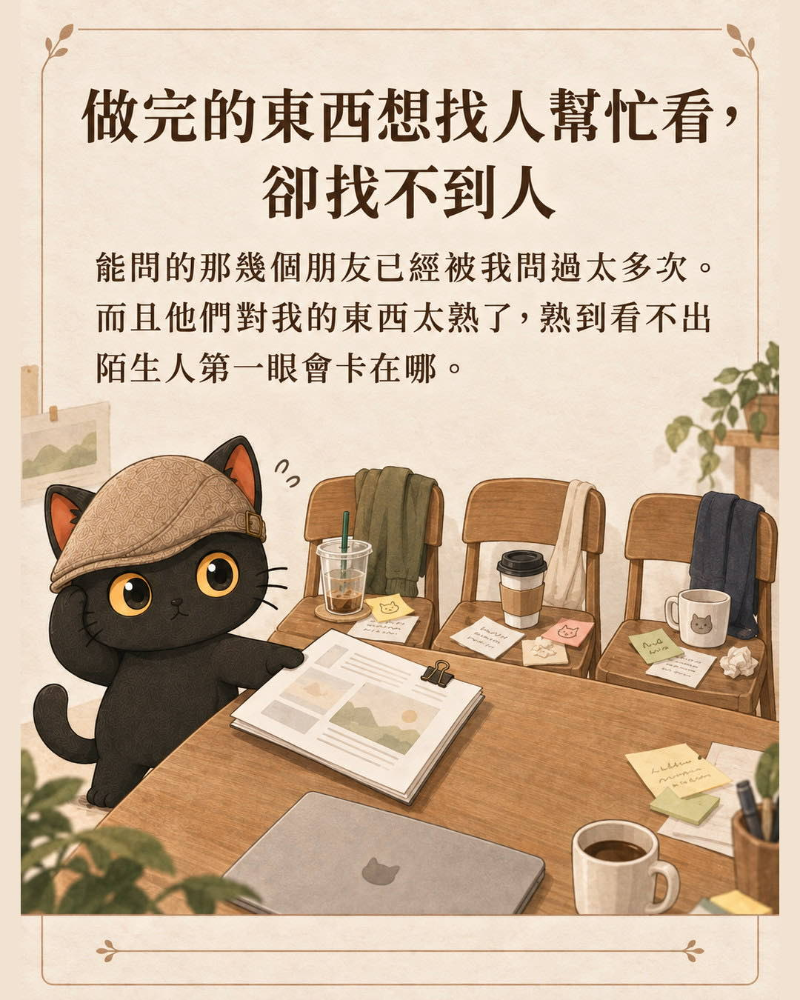
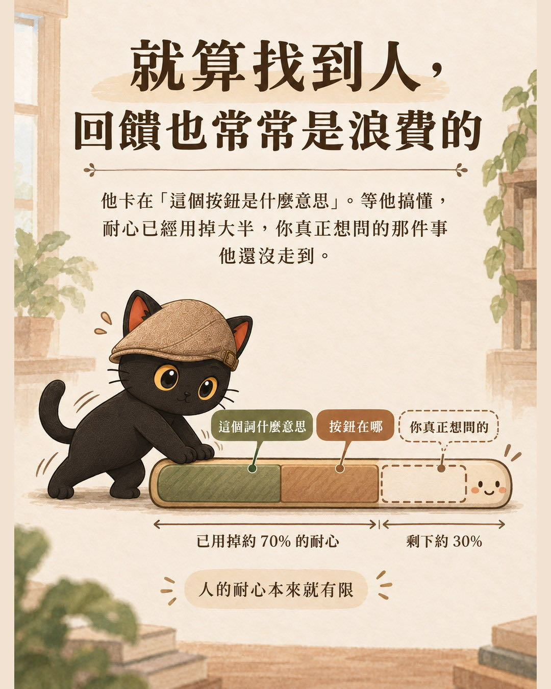
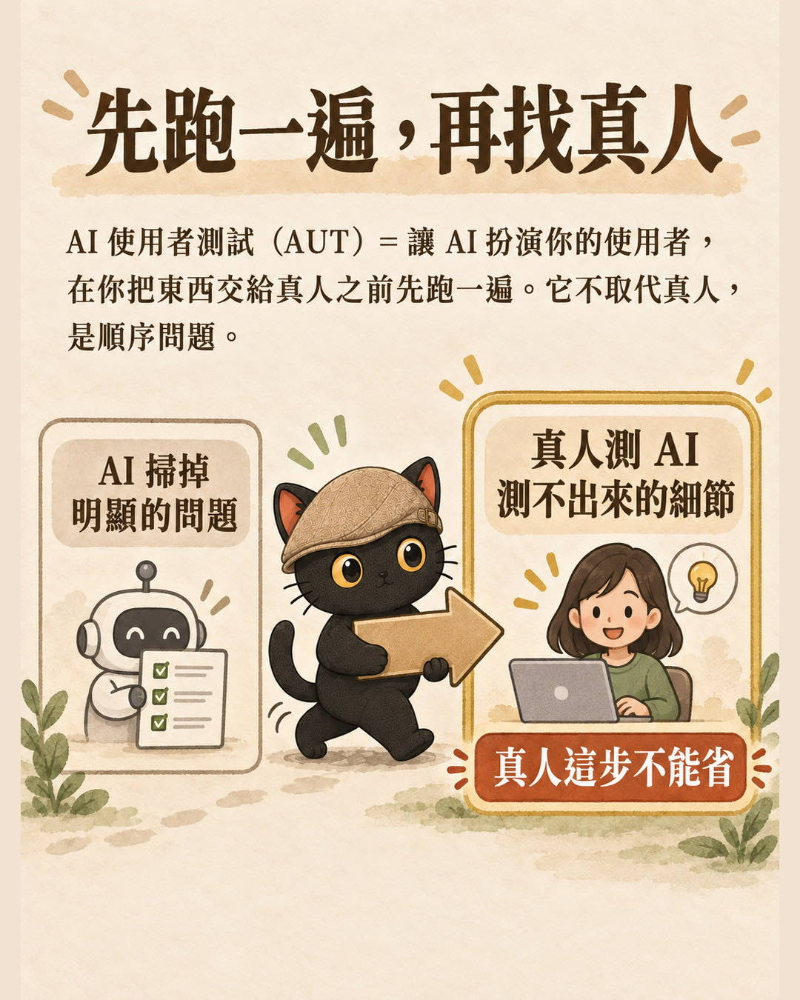
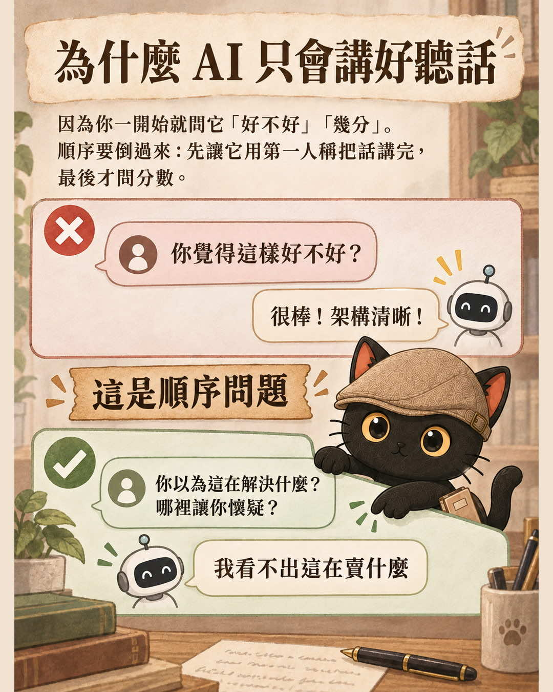
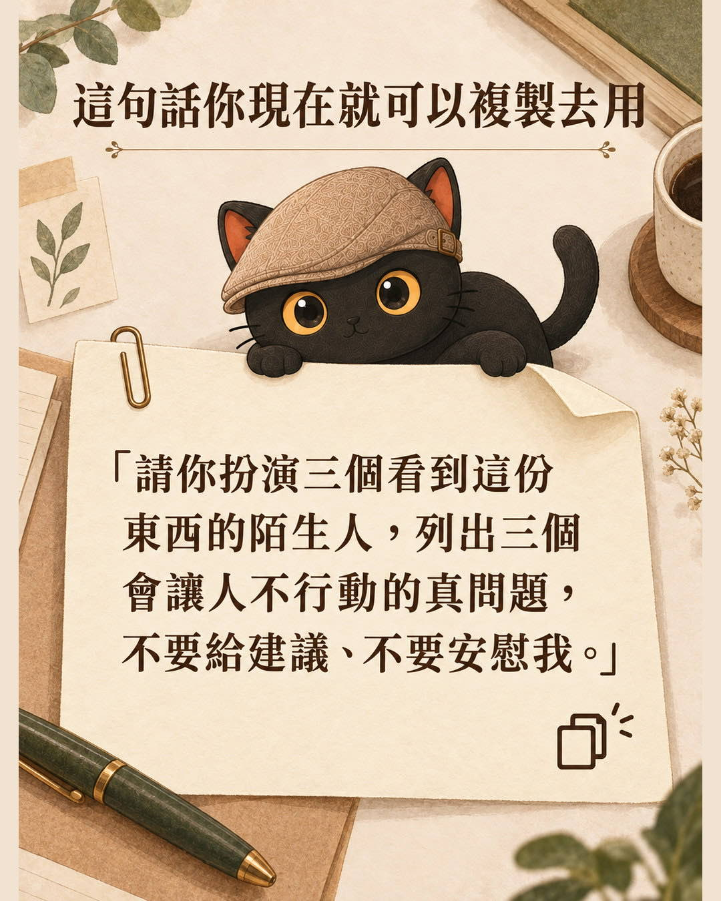

你做完一份課程招生頁、一份報價、一個網頁，想知道別人看了會怎麼想，但是找不到人幫你看。就算找得到，對方的耐心也常常花在很基礎的問題上，還沒走到你真正想問的地方就沒興趣了。AUT（AI User Testing，AI 使用者測試）做的事是讓 AI 先扮演你的使用者跑一遍，把明顯的問題掃掉，真人留給真正值得問的部分。這篇講它怎麼運作、我拿它抓到過哪些自己看不出來的問題，以及它做不到什麼。
- 做完招生頁、方案、報價，只能拿去問同一批朋友，而他們每次都說「很好啊」的人。
- 做出來的頁面、內容、流程還太粗糙，怕直接給人試用問題太多的人。
- 已經會叫 AI 扮演客戶給意見，但每次都拿到好聽話，想要更精闢、更直接的使用心得的人。
- 一句現在就能複製去用的話：「請你扮演三個看到這份東西的陌生人，列出三個會讓人不行動的真問題，不要給建議、不要安慰我。」
- 為什麼你問 AI「這樣好不好」永遠只拿得到好聽話，以及把順序倒過來的做法：先讓它用第一人稱把話講完，最後才問分數。
- 四種測法各在測什麼：測一群陌生人怎麼看、測某一個人會怎麼想、測有人操作會卡在哪、測有人亂用會不會壞。
每次按下送出之前，我都想先問一個人
課程招生頁寫完，我想知道陌生人看了會不會懂我在賣什麼。
報價單做好，我想知道對方看到那個數字，第一個念頭是什麼。
網頁做完，我想知道不熟操作的人會不會卡在某一步就放棄。
這三件事有個共同點：我自己判斷不了。我太清楚自己想講什麼，所以看不出別人會誤解的地方。
於是我需要找人幫我看一下。而這件事的真實狀況是：找不到人。
不是完全沒有人。是能問的那幾個朋友已經被我問過太多次，而且他們對我的東西太熟了，熟到看不出陌生人第一眼會卡在哪。

就算找到人，回饋也常常是浪費的
還有另一種更可惜的情況。
我請人幫我看一份東西，他看沒幾眼就卡在很基礎的地方。這個詞是什麼意思、這個按鈕要按哪裡、這頁到底在賣什麼。等他把這些搞清楚，耐心已經用掉大半。
我真正想問的那件事，他還沒走到就已經失去興致了。我拿到的回饋跟著失真。
真人的耐心是稀缺資源。把它花在基礎問題上，是很虧的事。

這套做法我後來整理成一個技能包，叫 AI 使用者測試（AI User Testing，簡稱 AUT）。這篇講它在做什麼、我拿它解決過什麼，以及它做不到什麼。
找不到人的時候，就用它
AUT 做的事很單純：讓 AI 扮演你的使用者，在你把東西交給真人之前先跑一遍。
它的定位我一開始就想清楚了，而且寫死在規則裡：
找得到人、而且對方有時間，就直接找真人。這包是給你找不到人、或找人之前想先把明顯的問題掃掉的時候用的。

先跑過一輪之後，會發生這些事：
- 明顯的問題大部分處理掉了，真人抓的是 AI 測不到的小毛病。
- 整個過程順很多，他有力氣講深一點的東西。
- 他會覺得你的東西本來就蠻順的。這個第一印象會影響他後面願意講多真的話。
方法的起點是一篇論文。PyMC Labs 與高露潔合作的研究（arXiv 2510.08338）發現，用 SSR 這個方法讓 AI 模擬購買意願，相關性可以達到真人自己重測一次的九成。
我從那裡長出來，但現在做的事已經比論文寬很多。寬出去的部分是我自己跑出來的經驗，不算在論文頭上，效果也不能拿那個九成來背書。
- AI 就是整個市場的縮影：在花錢做市調前，先用 AI 測反應 那篇是這套方法最早的版本，把論文的做法跟提示詞完整寫出來，這裡就不重複了。
架構：四種模式，先問對象是誰
我把它拆成四個模式。分不清該用哪個的時候，問自己一句：這次要測的，是一群還不認識我的人、某一個特定的人、一個要動手操作的頁面，還是一個會被亂按的系統？
| 模式 | 一句話 | 什麼時候用 |
|---|---|---|
| 一、群體驗證 | 一群陌生受眾看這份東西，會怎麼誤解、為什麼不買 | 產品頁、課程招生、方案定價、A/B/C 選哪個 |
| 二、具名對象多狀態預測 | 同一個具體的人，在不同心情與情境下會怎麼看 | 提案、報價、簡報，要交給某一個特定的人 |
| 三、任務式操作走查 | 使用者用這個介面做事，會卡在哪、會不會放棄 | 網頁、表單、工具，想知道長輩會不會用 |
| 四、功能與防呆走查 | 使用者亂用這個系統，會不會壞、有沒有破口 | 有登入、有權限、有驗證碼的功能。手上沒有這類東西就跳過這個模式 |
前三個問的是「人會怎麼想、會不會用」，第四個問的是「東西會不會壞」，出發點不同，不要混著跑。
四種的做法是同一套：先讓模擬出來的人用第一人稱把話講完，再標清楚你手上的材料是真人講過的還是你自己猜的，再讓他們表態會不會行動，最後一定要落到一件你真的要去找人做的事。
讓它有效的三件事
同樣是叫 AI 模擬使用者，做法差一點，結果差很多。這三件是我實測下來最關鍵的。
一、不要一開始就問分數
直接問 AI「你覺得這個好不好」「幾分」，你會得到討好你的答案。這是我最早踩的坑。
順序要倒過來：先讓每個模擬受眾用第一人稱回答「我以為這在解決什麼」「哪裡讓我懷疑」「我現在為什麼不買」，講完之後才問他到底會不會行動。
先自然反應，後標分數。反過來就沒用了。

二、至少兩個受眾要帶摩擦
如果每個模擬出來的人都很理性、很有禮貌、都認真讀完，那不是使用者，那是你的粉絲。
所以我固定要求：每輪至少兩個人帶摩擦。摩擦有七種可以挑，跳讀、誤解、沒耐心、預算敏感、信任不足、組織阻力、已經有替代做法。
三、模擬的人要用真人講過的話
這條是被實測打出來的。
我做過一次咪卡客服壓測，同一套檢索、同一批文章，只換題目來源：用 AI 想像出來的三十題，命中率九成；換成十一場一對一約談逐字稿裡的三十七題真人提問，只剩兩成八。
差距不在模型，在語彙。訪客問的是「我到底算不算會用 AI 的人」，我的文章叫「AI 能力分級」，一個字都對不上。AI 生成的題目會不自覺沿用我自己文案裡的詞，等於考題洩漏。
所以現在跑我自己的受眾時，至少兩個人物的台詞要用真人原話，不夠才補推測人物，而且推測的要標明是推測。
- 花大錢做產品前，先用 AI 驗證創業點子 真人那一條線長什麼樣：訪談怎麼問、承諾訊號怎麼看。AUT 掃完之後接的就是它。
我實際拿它解決過什麼
從六月到九月，我跑了十七次完整的實測。挑三個講。
一份要送出去的簡報，被抓到用詞踩線
一位講師的課程簡報，要給合作方看。我用模式二模擬本人看到這份簡報的反應，抓到一個我自己完全沒注意的問題：簡報裡把一段內容寫成「專業判斷與帶領」，而那個講法碰到了對方專業領域的執業界線。
給特定對象看的東西，用詞踩線是致命傷。這輪抓到六處措辭要改。我不放心，又找了另一家 AI 從頭複查兩輪，六處都指到同樣的地方。
一個生圖網站，長輩對著灰色按鈕發呆
我幫一個工作坊做了讓學員填表生圖的頁面。跑模式三的時候，我用「不熟操作的長輩」這個人設，實際把流程走一遍。
抓到的問題是：生成按鈕在條件不足的時候是灰的，點下去毫無反應，也不告訴你缺什麼。學員只會對著它發呆，然後放棄。
這個案例的價值在於它測的不是一張靜態頁面，是一條會產出東西的流程。填表到生圖到拿到成品，端到端走一次才看得到卡在哪一段。
一篇官網文章，改完之後分數真的動了
我拿自己的一篇官網文章草稿跑模式一，五個受眾，找出前三大不想讀下去的理由。照著改完之後，我用同樣五個受眾重跑一次。
這套方法最後會讓每個模擬的人表態，一到五分。五個人裡有三個從二、三分升到四分（四分的意思是「我有明確的使用情境，願意留資料或約時間」），另外兩個沒動。
這是我唯一一次留下改動前後對照的紀錄，也是我最確定「改對了」的一次。
只有一次，所以我不敢說「分數不動就一定是沒改到痛點」。我把它當成一個訊號：複測分數沒動的時候，先回頭確認自己改的是不是同一個問題，而不是急著往下走。
它做不到什麼
這段我一定要寫清楚，不寫就是騙人。
還有一個最有意思的發現。那次壓力測試裡，系統六項規格全過，但模擬使用者的第一人稱反應是：「我都告訴你它很爛了，你還要我找反證？這工具在質疑我。」結果是棄用。
你現在就可以試的十分鐘練習
不用等，也不用買任何東西。拿你手上任何一份對外的文字，服務介紹、報名頁、自我介紹都可以，做三件事：
- 貼給你的 AI，說「請你扮演三個看到這份東西的陌生人」。
- 要求它只做一件事：列出三個會讓人不行動的真問題，不要給建議、不要安慰我。
- 看那三個問題裡，有沒有一個是你自己早就知道、但一直沒處理的。
十分鐘。如果第三步的答案是「有」，這個方向對你就有用。

我大部分的文章都是這樣寫的：看得懂、自己做得起來的人，本來就不需要跟我買什麼。
如果你想要完整的那個技能包
上面那個練習跑得動，但它只有一層。我自己土法煉鋼跑了幾個月，最常漏掉的是這三件：
我以為我換了人設，其實我每次想到的都是同一種讀者。所以那包裡有固定的受眾組合表，規定每輪至少兩個人要帶摩擦，摩擦有七種可以挑，不准全部都是好好先生。
拿真人講過的話跑出來的結論，跟憑空想像跑出來的結論，可信度差很遠，但寫在紙上看起來一模一樣。所以那包把材料分成四級，每份報告開頭就要標，免得自己過幾天回頭看，把當初的假設當成結論在用。
這是最常見的。看完一堆模擬反應，覺得很有收穫，然後就沒有然後了。所以那包規定每一輪最後一定要落到一個真人動作，不落就是沒跑完。
除了這三件，還有四個模式各自的完整流程與固定輸出格式、怎麼標分數才不會每次尺度都不一樣、幾個人夠用（測文章四到五人，測要掏錢的決定要十人），以及我踩過的三個坑。
一個技能包，整份貼給你的 AI 就能用，Claude、ChatGPT、Gemini 都吃得下。定價 1200 元。
商店還在做最後的準備，開賣的時候我會在官網和 LINE 社群公告。如果你想在開賣的時候知道，現在到 LINE 社群留一句「AUT」就可以，我會記下來。
如果你之前讀過我那篇〈AI 就是整個市場的縮影〉：那篇文末附的免費技能包，做的就是這裡的模式一。這三個月它從一個模式長成四個，也多了十七次實跑累積下來的受眾組合、規模建議與判準。
- 裝了別人的技能包，AI 會不會被搞亂？ 拿到任何一包（包括這一包）之前，我自己會先做的三件事。
說到底就是兩段
我不會說跑過 AUT 就等於驗證過。它產出的是假設，不是證據，最後一定要有一個真人動作。
先掃再問，兩段而已。
- AI 就是整個市場的縮影：在花錢做市調前，先用 AI 測反應 這套方法最早的版本，論文做法與提示詞都在那篇。
- 花大錢做產品前，先用 AI 驗證創業點子 AUT 掃完之後要接的真人那條線。
- 裝了別人的技能包，AI 會不會被搞亂？ 拿到任何一包之前先做的三件事。
- 最好的技能包是怎麼來的 這一包就是這樣長出來的：先在真實工作裡跑，跑出判準才寫成規則。
- AI 常見問題 37 問 文中那三十七題真人提問就是從這裡來的，也是我現在跑 AUT 時人物台詞的來源。